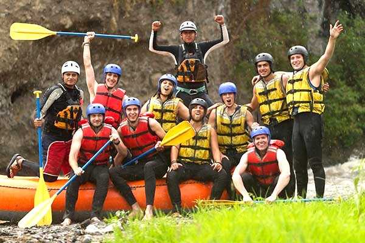

White Water Rafting Adventures provides unforgettable outdoor experiences for families, friends, and adventure seekers.


White Water Rafting Adventures provides unforgettable outdoor experiences for families, friends, and adventure seekers.
White Water Rafting Adventures began with a passion for exploring rivers and sharing the excitement of outdoor adventures with others. From humble beginnings, our company has grown into a trusted rafting destination, welcoming families, friends, and adventure seekers from around the world. We are committed to providing safe, enjoyable, and unforgettable experiences on every trip.
Over the years, our experienced guides have led thousands of guests through breathtaking rivers and exciting rapids while promoting teamwork, respect for nature, and environmental stewardship. Today, White Water Rafting Adventures continues to create lasting memories by combining professional service, modern equipment, and a spirit of adventure for every visitor.
